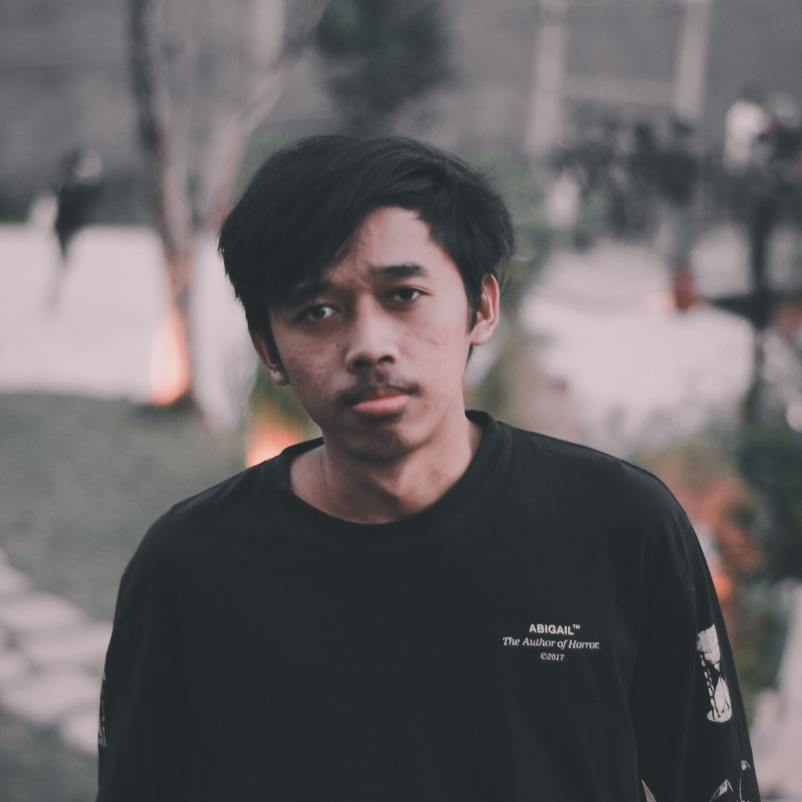

Tentang Universitas Slamet Riyadi
|
Universitas Slamet Riyadi sudah ada sejak tahun 1977 yaitu saat Universitas Slamet Riyadi di bawah naungan Yayasan Pendidikan Surakarta Hadiningrat (YPSH) yang didirikan pada tanggal 20 Juni 1977 berdasarkan SK No. 04/Kep/YPSH/1977. Namun dalam perjalanan Universitas Slamet Riyadi yang saat itu memiliki Fakultas Hukum, Fakultas Pertanian, Fakultas Ekonomi, Fakultas Keguruan dan Ilmu Pendidikan, dan Fakultas Ilmu Sosial dan Politik, pengelolaannya diserahkan oleh YPSH kepada YPT Slamet Riyadi pada tanggal 21 Juni 1980. Universitas Slamet Riyadi dengan sebutan UNISRI mendapat status tercatat dari Kopertis Wilayah VI Jawa Tengah berdasarkan Surat Keputusan No. 119/K/22/Kop.VI/1980 tanggal 30 Juni 1980. Selanjutnya, pada tanggal 24 Oktober 1981 UNISRI mendapat status terdaftar dari Departemen Pendidikan dan Kebudayaan berdasarkan SK Menteri P dan K Nomor 0309/0/1981 tanggal 24 Oktober 1981 untuk jenjang Sarjana Muda. Guna memenuhi animo para mahasiswa maka pada tahun 1983, YPT Slamet Riyadi mengajukan status terdaftar untuk jenjang Sarjana, dan status legal formalnya didapatkan pada tahun 1984. |

|
Informasi lainnya |
|
Tentang Pembuat Website
|
Perkenalkan Nama saya Muhammad Nurul Ikhwan, atau biasa dipanggil Ikhwan. Saat ini saya sedang menempuh pendidikan sarjana jurusan Pendidikan Teknologi Informasi di Universitas Slamet Riyadi Surakarta. Saya memfokuskan diri dalam mempelajari pengembangan aplikasi web. Bahasa pemrograman utama yang saya jelajahi adalah Javascript.  |
|
Informasi lainnyaWebsitemnikhwan.my.idSosial MediaInstagram Facebook Github |